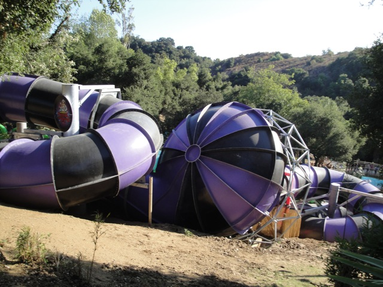
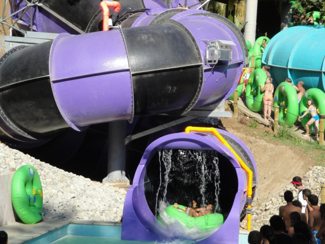

| |
Dr. Von Dark's Tunnel of Terror Photos

We're here at Raging Waters, where we'll be reveiwing their newest waterslide. Dr. Von Dark's Tunnel of Terror. Dr. Von Dark is a model of ProSlide's newest ride type. A Tantrum. This is basically a slide where in the middle of the slide, you go through a mini Tornado funnel, only there's more slide afterward. Now when I originally saw the commercials for Dr. Von Dark, I thought it was going to be f*cking amazing. In fact, this ride brought me back to Raging Waters. but then again, look at how they described it. To quote the L.A Times, "Dr. Von Dark’s Tunnel of Terror, will feature visual effects projected on curtains of water — including flames, sharks, dinosaurs, lightning bolts, saw blades and brick walls." So yeah, this sounded like it was going to be a f*cking amazing water slide. So first off, you watch the Preshow. And while it's cheesy, it's still pretty cool and entertaining. So far, it's living up to the commercial. Then you climb the stairs and get in your tube and head into the funnel. So far, we're having fun. No crazy effects, but it's still fun as you head through the first helix in the dark. You gain a little speed as you laugh with your friends. Then you suddenly notice that you're moving vertically before falling back down, yup. We have reached the funnel. And we finally start to notice some of the "amazing" theming the ride claimed to have. Glowing green question marks. No flames. No dinosaurs. No Brick Walls. Just Green Question Marks. This ride is about as well themed as the Riddlers Revenge Station. All that's missing are speakers to play Ecuador by Sash in the funnel and this will pretty much turn Dr. Von Dark into Riddler's Revenge's Station the Ride. Anyways, you then leave the funnel and head into the second helix. This one is fun because you go through it a little faster than the first. You're still having fun in the dark when you see the light. It's about to be over. When, SMACK!!! You hit the water curtain and it's over. And NOTHING is projected onto this curtain. While I can't say that Dr. Von Dark sucked because it was a really fun waterslide. The right words would be "Supremely Dissapointed". It's not a bad ride by anymeans, but the commercial simply made it out to be too good (And not to mention flat out lied about the special effects). It's pretty much the Dark Knight of water slides. They're both fun rides that simply got the wrong type of theming for both rides. Not to mention on both rides, the Preshow is still the best part.
7/10
Location: Raging Waters
Opened: 2010
Built by: ProSlide
Last Ridden: August 22, 2021
Dr. Von Dark's Tunnel of Terror Photos


Home
|